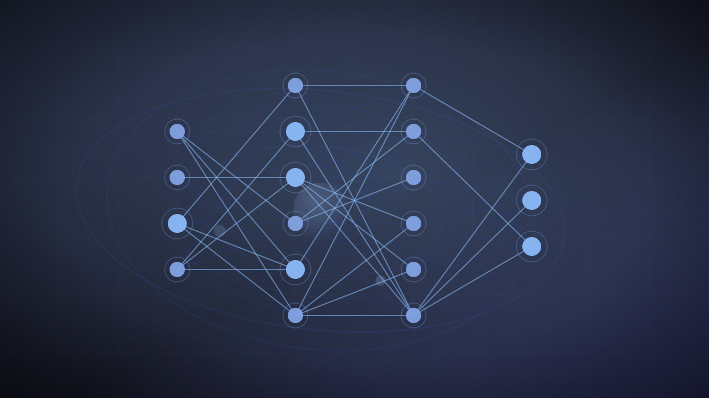

DeepMind pilots a double-blind way to test its own models against secret benchmarks
A cryptographic "box" built on confidential computing lets outside evaluators test a proprietary model without seeing its weights, and without Google seeing the test questions.

Original cover art, generated for this story. THE VISSION does not republish third-party press imagery.
- Google DeepMind ran what it calls the first double-blind evaluation of a proprietary frontier-class AI model, testing Gemini Flash Lite.
- Partners on the pilot include the Singapore AI Safety Institute, OpenMined, AVERI and MLCommons.
- The setup uses Google Cloud Confidential Space, an Nvidia H100 confidential GPU and Intel TDX memory encryption so evaluators can't see model weights and Google can't see the test prompts.
- The aim is to address benchmark contamination — the risk that a model has already seen test questions during training, inflating its scores.
Google DeepMind says it has run the first double-blind evaluation of a proprietary, frontier-class AI model — a setup designed to solve a structural problem in how closed models get tested: the company that owns the model can see what questions it's being tested on, and the evaluator either has to trust the company's own API or would need the model's weights to test independently, which the company will not hand over.
The pilot tested Gemini Flash Lite in partnership with the Singapore AI Safety Institute, OpenMined, AVERI and MLCommons, using Google Cloud Confidential Space together with an Nvidia H100 confidential GPU and Intel TDX host memory encryption. The cryptographic setup is built so the external evaluator's test questions never become visible to Google, and Google's model weights never become visible to the evaluator — each side's data stays confined to what DeepMind calls a cryptographic "box."
The problem the pilot targets is benchmark contamination: if a model has already encountered a test's questions somewhere in its training data, its score on that test stops measuring real capability and starts measuring memorization. DeepMind's own framing of the trade-off it says the pilot eliminates: "Double-blind evaluations eliminate this compromise...we can cryptographically verify that both the external evaluation data and the proprietary model remain private to their respective owners."
DeepMind positions the pilot as a template for higher-stakes evaluation contexts going forward — cybersecurity testing and government evaluations in particular, where both the model owner's IP and the evaluator's test material carry sensitivity that neither side has previously been able to fully protect while still allowing an independent check.
Benchmark contamination is one of the more persistent, least-resolved credibility problems in AI evaluation — every capability claim ultimately rests on trusting either the lab's self-reported numbers or an evaluator's access to material the lab would rather keep private. A working cryptographic method for testing a closed model without either side seeing the other's data is infrastructure other labs and regulators could adopt, not just a one-off DeepMind exercise.